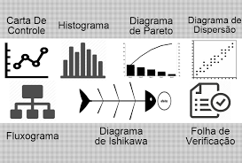
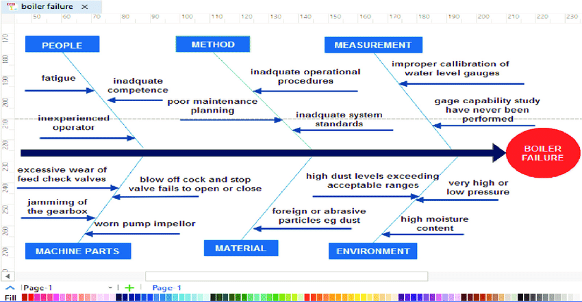
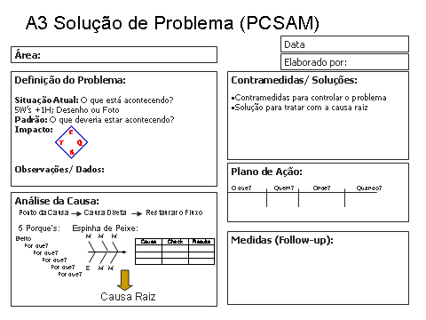
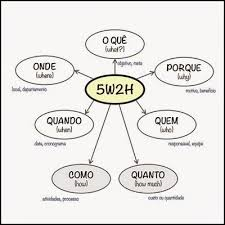
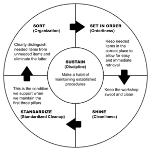
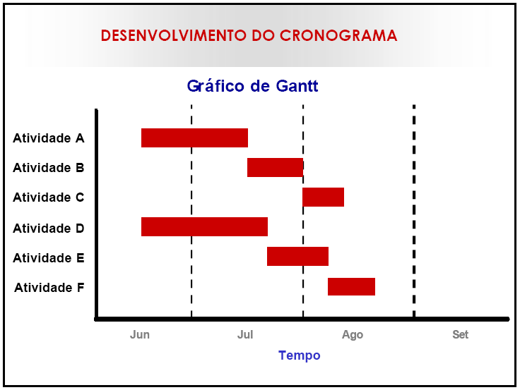
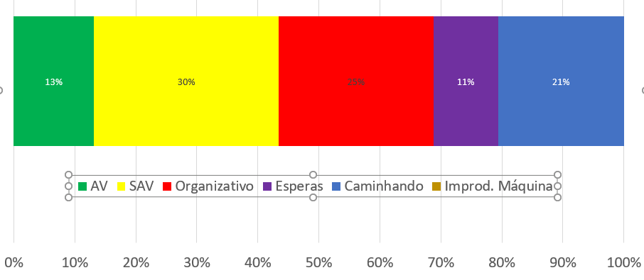
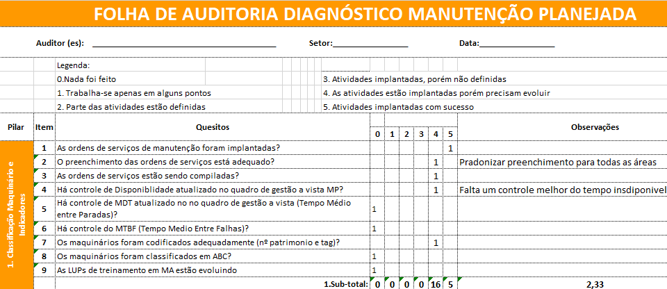

Do problema à manutenção efetiva
A equipe registra o desvio, prioriza as perdas, investiga causas, organiza ações e verifica resultados. A MCC relaciona esse trabalho às funções, aos modos de falha e às consequências do sistema.
Este primeiro módulo organiza as ferramentas da aula em oito blocos. O segundo reúne os oito blocos de confiabilidade, FMEA, riscos, requisitos, seleção de tarefas e implantação.
Dados e representação do processo
A ferramenta começa pela pergunta que a equipe precisa responder.
| Ferramenta | Uso na manutenção | Cuidado de interpretação |
|---|---|---|
| Folha de verificação / planilha | Registrar falhas, horários, ativos, causas e intervenções. | Padronizar categorias e unidades para comparar. |
| Fluxograma | Representar sequência, decisões e responsabilidades. | Conferir se corresponde ao processo real. |
| Histograma | Mostrar distribuição de uma variável, como duração dos reparos. | Distribuição não equivale a sequência temporal. |
| Diagrama de dispersão | Examinar relação entre duas variáveis, como carga e temperatura. | Associação não demonstra causa. |
| Carta de controle | Acompanhar variação no tempo com limites de controle. | Limites de controle e especificações têm finalidades diferentes. |
| Benchmarking | Comparar práticas e resultados com referências. | Considerar contexto, equipamentos e critérios usados. |
Antes de selecionar uma técnica, definir o objetivo: priorizar equipamentos, entender recorrências, comparar custos ou organizar trabalho. O dado precisa sustentar essa decisão.

Pareto, GUT e criticidade
Priorizar exige explicitar o critério usado.
| Abordagem | Pergunta | Aplicação |
|---|---|---|
| Pareto | Quais categorias concentram mais ocorrências, tempo ou custo? | Ordenar perdas de manutenção por categoria e acompanhar o acumulado. |
| GUT | Qual problema combina gravidade, urgência e tendência de piora? | Comparar problemas com escalas e critérios definidos. |
| Classificação ABC | Qual é o impacto da falha de cada equipamento? | Classificar criticidade considerando segurança, qualidade, produção, confiabilidade, reparo e custo. |
| Critérios e pesos | Como combinar dimensões de importância diferente? | Definir critérios cᵢ, pesos wᵢ e regra de agregação antes de pontuar. |
A criticidade do ativo e a prioridade de uma OS são relacionadas, mas a decisão também depende da situação atual. Um problema de segurança pode exigir tratamento mesmo com baixa frequência.
A proporção 80/20 é uma referência conhecida, não uma obrigação dos dados. GUT significa Gravidade, Urgência e Tendência. A pontuação exige uma convenção explícita. A classificação ABC dos slides não determina automaticamente uma única estratégia de manutenção.
Brainstorming, Ishikawa, 5 porquês e A3
Hipóteses de causa precisam de verificação no local e nos dados.
Brainstorming organiza a geração de ideias com participação da equipe. O Ishikawa estrutura causas possíveis em famílias. Os 5 porquês aprofundam relações causais. O A3 reúne problema, análise, contramedidas, plano e acompanhamento em um registro.
- Descrever padrão esperado, condição atual e desvio quantificado.
- Localizar onde, quando e com qual frequência o problema ocorre.
- Separar fatos observados de hipóteses.
- Investigar relações de causa e efeito com evidências.
- Verificar o resultado e atualizar o trabalho padrão quando necessário.
Contramedida pode conter o problema sem remover sua origem. A ação sobre a causa busca evitar a recorrência. Uma espinha de peixe preenchida, por si só, não comprova causa-raiz.


O slide 15 usa um mês sem recorrência como referência de acompanhamento. A janela necessária depende da frequência e das condições de operação. Não basta um prazo fixo para demonstrar a eliminação da causa.
5W2H e plano de ação
Uma decisão precisa virar tarefa com responsável, prazo e recurso.
| Pergunta | Campo | Exemplo aplicado |
|---|---|---|
| What? | O quê? | Revisar o padrão de identificação de lubrificantes. |
| Why? | Por quê? | Reduzir o risco de aplicação de produto inadequado. |
| Where? | Onde? | Almoxarifado e pontos de manutenção da bomba. |
| When? | Quando? | Até o prazo acordado no plano. |
| Who? | Quem? | Responsável pela manutenção, com apoio do almoxarifado. |
| How? | Como? | Conferir documentos, identificar recipientes e atualizar checklist. |
| How much? | Quanto custa? | Estimar mão de obra e materiais necessários. |
O 5W2H organiza a implementação. A equipe ainda precisa estabelecer como verificar o efeito da ação. O A3 pode conter esse plano e as medidas de acompanhamento.

5S e trabalho padronizado
Organização ajuda a enxergar desvios e sustentar rotinas.
| Senso | Termo | Aplicação na manutenção |
|---|---|---|
| Utilização | Seiri | Separar necessários e desnecessários no local de trabalho. |
| Ordenação | Seiton | Definir identificação e posição de ferramentas e materiais. |
| Limpeza | Seiso | Manter o ambiente e observar vazamentos, sujeira e anomalias. |
| Padronização / saúde | Seiketsu | Estabelecer condições e rotinas para sustentar os sensos anteriores. |
| Autodisciplina | Shitsuke | Manter práticas e revisar o cumprimento dos padrões. |
O 5S dá suporte à manutenção: reduz procura de ferramentas, facilita identificar materiais e torna desvios visíveis. A organização precisa persistir na rotina.

Gantt, recursos e redes de atividades
O cronograma deve representar tempo e dependências.
O Gantt apresenta atividades como barras horizontais de duração proporcional ao tempo. Permite visualizar início, fim, sobreposição e marcos.
| Ferramenta | O que ajuda a analisar |
|---|---|
| Gantt | Datas, duração, progresso e coexistência de atividades. |
| Histograma de recursos | Carga de trabalho por período e especialidade. |
| PERT-CPM | Dependências e caminho que condiciona a duração do projeto. |
| Curva S | Evolução acumulada de esforço, custo ou progresso, conforme a medida escolhida. |
| Marcos | Eventos relevantes, como início de parada e liberação do sistema. |
Uma atividade não começa apenas porque há espaço no calendário. Pode depender de material, conclusão de outro serviço, equipe especializada ou janela operacional.

Gestão diária, indicadores e valor
O quadro de gestão deve indicar situação, desvio e ação.
Um dashboard útil mostra o estado atual frente ao padrão, o que mudou, os problemas abertos, os responsáveis, os prazos e as tendências dos indicadores. A cadeia de ajuda define a quem recorrer quando a equipe não consegue resolver um desvio.
| Pergunta de gestão | Informação necessária |
|---|---|
| Qual é a situação? | Programado e realizado, ativos indisponíveis e condições anormais. |
| O que exige ação? | Desvio quantificado, prioridade, responsável e prazo. |
| Qual é a tendência? | Disponibilidade, MTBF, MTTR, qualidade, produtividade e custos. |
| Como a equipe trabalha? | Padrões em uso, pendências e encaminhamentos. |
A análise do tempo identifica esperas, deslocamentos e dificuldades organizativas. O material também distingue atividades com e sem agregação de valor. Controles necessários, inclusive de segurança, devem ser avaliados pelo propósito e não eliminados apenas por não transformar o produto.

Riscos, autodiagnóstico e software
O sistema de gestão sustenta o processo e a rastreabilidade.
O quadro de riscos dos slides avalia estrutura do projeto, tecnologia, apoio da administração, interfaces, pessoas, fornecedores e cronograma. A avaliação precisa indicar consequência, controles e responsável.
O autodiagnóstico verifica maturidade das rotinas: cadastro, OS, planejamento, indicadores, criticidade e capacitação. As evidências orientam as melhorias.
Recursos de um sistema de manutenção
- Cadastro de ativos e associação de manuais, desenhos e procedimentos.
- Agendamento por período, uso ou condição e compatibilização de recursos.
- Ordens de serviço com custos, pessoas, materiais e resultados.
- Histórico de falhas, causas e ações.
- Indicadores, Gantt, Kanban e acesso móvel.
O material mostra um software como exemplo. A utilidade dos recursos depende da qualidade do cadastro e dos registros. As telas da aula não representam uma verificação da oferta atual de produtos.

Uma bomba com paradas recorrentes
Dados, prioridade, causa, ação e revisão da manutenção.
Caso hipotético: uma bomba de processo acumulou 30 horas de parada em um mês. O padrão de gestão admitia até 10 horas. O desvio é de 20 horas. Os valores e as hipóteses são didáticos.
1. Folha de verificação e Pareto
| Categoria registrada | Parada | Participação | Acumulado |
|---|---|---|---|
| Rolamento | 12 h | 40,0% | 40,0% |
| Vedação | 8 h | 26,7% | 66,7% |
| Problema elétrico | 6 h | 20,0% | 86,7% |
| Outros | 4 h | 13,3% | 100,0% |
Rolamento e vedação concentram 20 das 30 horas, ou 66,7%. O Pareto aponta onde aprofundar a análise. Esses rótulos descrevem categorias de ocorrência, ainda não causas comprovadas.
2. Ishikawa e 5 porquês
Para as falhas relacionadas ao rolamento, a equipe levanta hipóteses sobre lubrificação, alinhamento, contaminação, carga e método de inspeção.
| Pergunta sucessiva | Hipótese a verificar |
|---|---|
| Por que a bomba parou? | O rolamento perdeu condição de funcionamento. |
| Por que o rolamento degradou? | A lubrificação pode ter sido inadequada. |
| Por que poderia estar inadequada? | Pode ter ocorrido aplicação de produto incompatível. |
| Por que isso poderia ocorrer? | Recipientes podem estar sem identificação suficiente. |
| Por que a identificação pode estar ausente? | O padrão pode não definir identificação e conferência antes do uso. |
Verificação: comparar documentos, produtos, registros de execução e condição do componente. A sequência só sustenta uma conclusão causal se as evidências confirmarem os vínculos. O número de perguntas depende da análise.
3. 5W2H e 5S
| Campo | Ação no cenário em que a hipótese se confirma |
|---|---|
| O quê / por quê | Padronizar identificação e conferência dos lubrificantes para evitar aplicação incorreta. |
| Onde | Almoxarifado e área de manutenção da bomba. |
| Quem | Responsável da manutenção e responsável do almoxarifado. |
| Quando | Até o final da primeira semana do plano. |
| Como | Conferir documentação, identificar recipientes, organizar locais, atualizar checklist e capacitar a equipe. |
| Quanto | 4 HH × R$ 100/HH + R$ 100 de identificação = R$ 500, em valores hipotéticos. |
4. Programação e monitoramento
| Período | Atividade | Resultado esperado |
|---|---|---|
| Semana 1 | Confirmar hipóteses e executar ações aprovadas. | Evidências e padrão revisado. |
| Semana 2 | Verificar adesão ao padrão. | Registros e correção de desvios. |
| Semanas 3 e 4 | Acompanhar ocorrências e tempo de parada. | Comparação com o período anterior. |
| Após o ciclo | Reavaliar tarefa e intervalo de manutenção. | Plano atualizado conforme resultados e contexto. |
Suponha que a parada caia de 30 para 12 horas, com exposição operacional comparável. A redução observada é 60%. Ainda há 2 horas acima do padrão de 10 horas. O resultado exige acompanhamento e investigação das perdas restantes.
5. Conexão com a MCC
A análise retorna à função da bomba, à falha funcional, ao modo de falha e às consequências. A equipe então justifica a tarefa aplicável, registra os recursos e acompanha sua efetividade. Pareto orienta a investigação, Ishikawa organiza hipóteses e 5W2H organiza ações. A decisão de manutenção continua dependendo da análise técnica.
Qual ferramenta escolher?
- Registrar e compreender: folha de verificação, fluxograma e gráficos adequados ao dado.
- Priorizar: Pareto, GUT e criticidade por critérios explícitos.
- Investigar: brainstorming, Ishikawa, 5 porquês e A3.
- Executar: 5W2H, 5S, cronograma e recursos.
- Acompanhar: gestão diária, indicadores, autodiagnóstico e registros no sistema.
- Justificar as tarefas: análise centrada na confiabilidade.
24 perguntas sobre ferramentas
As questões de aplicação usam o caso didático. As demais retomam os conceitos da aula.
Dados
- Qual objetivo deve anteceder a escolha de uma ferramenta?
- Diferencie histograma e carta de controle.
- Por que um diagrama de dispersão não comprova causa?
Prioridade
- Como Pareto ajuda a priorizar perdas?
- O que significam Gravidade, Urgência e Tendência?
- Quais critérios podem fundamentar a criticidade ABC?
Causas
- Diferencie hipótese de causa e causa confirmada.
- Como brainstorming, Ishikawa e 5 porquês se complementam?
- Qual é a função do A3 no acompanhamento da solução?
Ação
- Quais são as sete perguntas do 5W2H?
- Por que responsável e prazo são necessários no plano?
- Aplicação: que evidências verificariam a ação sobre lubrificantes?
5S
- Relacione cada senso do 5S a uma prática de manutenção.
- Como organização e limpeza ajudam a identificar anomalias?
- Por que uma ação isolada de organização não sustenta o 5S?
Cronograma
- O que as barras do Gantt representam?
- Qual a utilidade do histograma de recursos?
- O que a análise das dependências acrescenta ao cronograma?
Gestão diária
- Que informações um quadro de gestão diária deve mostrar?
- Qual a função da cadeia de ajuda?
- Aplicação: por que 12 horas de parada ainda exigem ação no caso da bomba?
Sistemas
- O que um autodiagnóstico da manutenção pode avaliar?
- Quais registros um software deve apoiar para produzir indicadores úteis?
- Aplicação: como as ferramentas do caso da bomba se conectam à MCC?
Fontes e notas
- d.ferramentas.pptx: 47 slides, ferramentas de gestão e qualidade aplicadas à manutenção.
- e.a.eng_manutencao(1).pptx e e.eng_manutencao(1).pptx: 36 slides cada, textos coincidentes com os materiais de MCC anteriormente fornecidos.
Figuras extraídas dos slides, com créditos visíveis preservados. A árvore de falhas do módulo MCC usa a versão refeita nesta conversa. Definições breves das ferramentas listadas e o caso integrado são complementos didáticos. Valores, frequências e resultados do caso são hipotéticos.
As telas e referências normativas dos slides são material de aula. Não foram usadas para verificar versões atuais de produtos ou prescrever conformidade normativa.